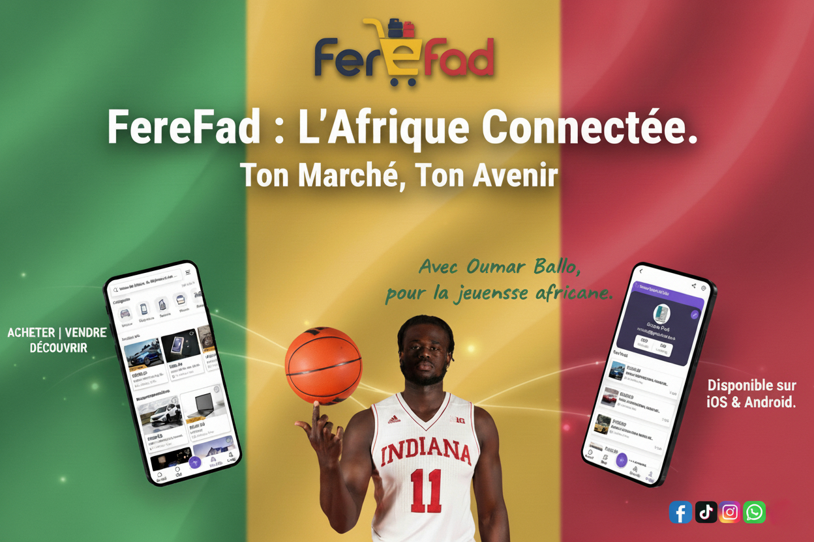

Nos réalisations
Découvrez une sélection de projets qui illustrent notre passion pour le digital.

FereFad
La Marketplace de Greenfad
Plateforme de Petites Annonces pour l'Afrique
FereFad est une plateforme inspirée par Oumar Ballo pour autonomiser la jeunesse africaine via le commerce numérique, soutenue par Greenfad pour encourager la croissance économique à travers une marketplace inclusive et transparente.
Voir le projetQRFAD
Scan & Commandez !
Qrfad – Le menu digital pensé pour l’Afrique.
QRFAD est une solution numérique locale qui permet aux restaurants et hôtels africains de créer des menus digitaux via QR code, simples à gérer, accessibles en plusieurs langues et adaptés aux réalités du terrain.
Voir le projet
Fad Card
Carte de visite numérique NFC
Votre identité professionnelle, digitale
La Fad Card de GreenFad est une carte de visite digitale NFC/RFID. En un simple geste, elle permet de partager vos coordonnées de façon moderne, sécurisée et mémorable, révolutionnant la manière de réseauter.
Voir le projetL’Amitié Fad
Le confort connecté
L’Amitié Fad - Votre Assistant Hôlelier Digital
L’Amitié Fad est une solution qui simplifie la communication en hôtel. Grâce à un QR code, les clients peuvent demander des services (ménage, taxi, etc.) directement depuis leur smartphone.
Voir le projetD'autres projets arrivent bientôt.
Notre équipe travaille constamment sur de nouvelles innovations. Revenez bientôt !